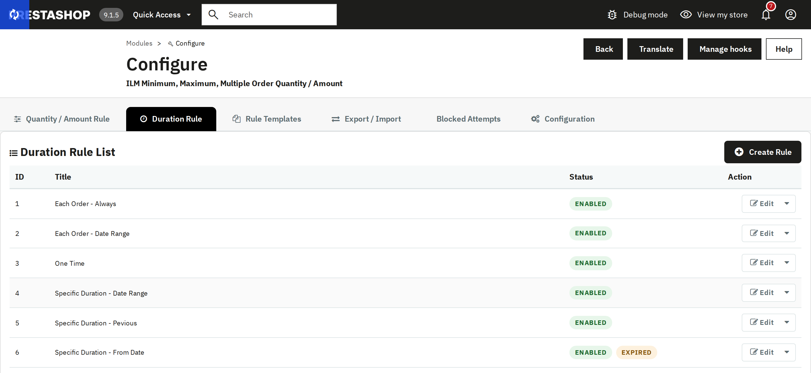
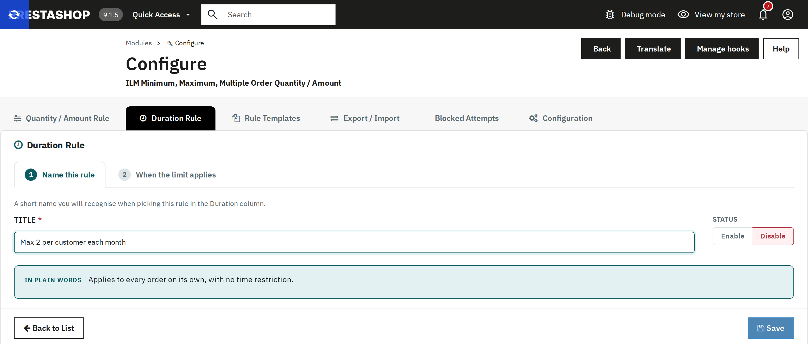
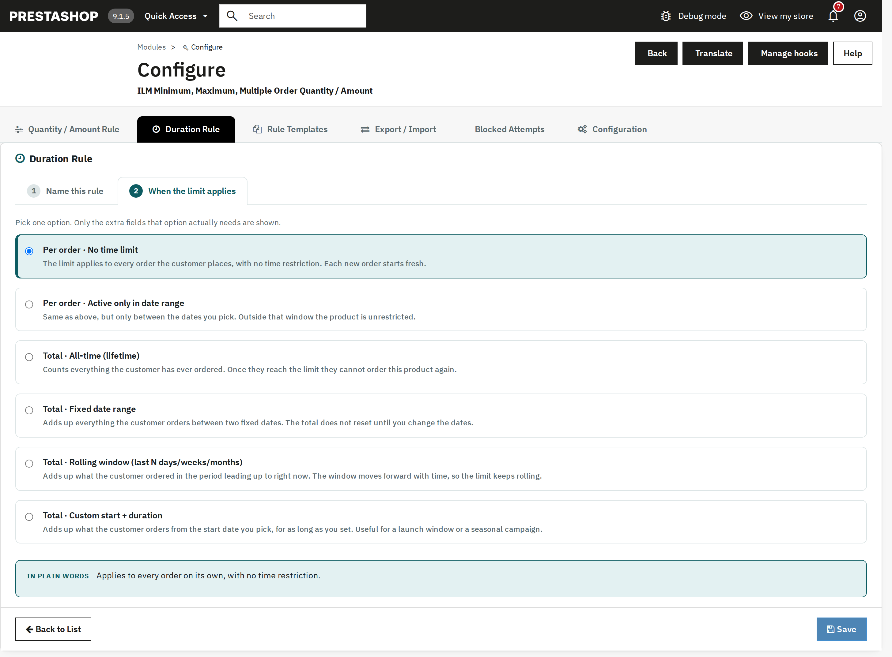
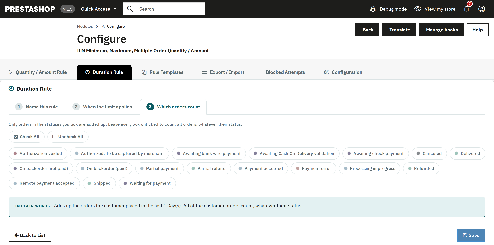

A Duration Rule decides when a Min/Max/Multiple limit resets, and which of the customer's past orders are added up against it. Six built-in presets ship with the module, and you can add more.

Duration Rule List — the six presets that ship with the module.
A rule with dates shows Expired next to Enabled once its dates have passed, and Scheduled while they have not started yet. Either way it applies to nothing at that moment.
Step 1 — Name this rule: a short title you will recognise later in the Duration column on the Quantity/Amount Rule tab.

Step 2 — When the limit applies: pick exactly one of six ways to measure the limit.

| Type | Meaning |
|---|---|
| Per order · No time limit | Applies to every order on its own, with no time restriction. Each new order starts fresh. |
| Per order · Active only in date range | Same as above, but the rule is only active between two fixed dates you pick; outside that window the product is unrestricted. |
| Total · All-time (lifetime) | Adds up everything the customer has ever ordered. Once they reach the limit they cannot order the product again. |
| Total · Fixed date range | Adds up everything the customer orders between two fixed dates. The total does not reset until you change the dates. |
| Total · Rolling window | Adds up what the customer ordered in the last N day(s)/week(s)/month(s)/year(s), counted back from right now. The window keeps moving forward with time. |
| Total · Custom start + duration | Adds up what the customer orders starting from a date you pick, for as long as you set — useful for a launch window or a seasonal campaign. |
Types that need extra input reveal a small field group in place, for example the rolling window's day/week/month/year count:

Only the fields the chosen type actually needs are shown — the panel below reads the choice back in plain words before you save.
Step 3 — Which orders count: tick the order statuses to add up (Delivered, Payment accepted, etc.). Leave every box unticked to count all orders regardless of status. This step only appears for the four "Total" types — the two "Per order" types don't need it.

This is also where Duration Rules become aware of a customer's real order history — the "Total" presets look up the customer's actual past orders in these statuses, not synthetic data.